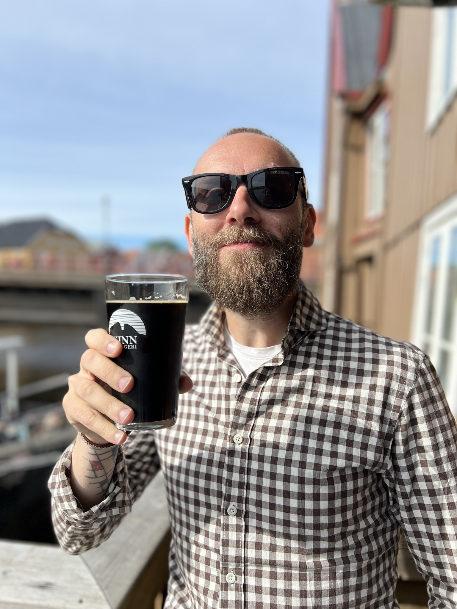

Fredagsprinsen?
Jag heter Joakim och bor på Frösön utanför Östersund. Mitt intresse för öl började när jag jobbade på Systembolaget för många år sedan – där väcktes nyfikenheten, och sedan dess har den bara vuxit.
Jag håller ölprovningar för alla typer av grupper – nybörjare, entusiaster eller blandade sällskap. Vissa vill ha ett formellt och informativt upplägg, andra föredrar en mer avslappnad kväll där jag fungerar som en extra kompis som håller låda.
Det viktigaste för mig är att varje provning anpassas efter er. Ni ska smaka något nytt, lära er något oväntat – och ha riktigt roligt under tiden.
Provningar & upplägg
Jag håller ölprovningar på vardagskvällar och helger – alltid med ett tydligt, avslappnat upplägg där alla kan vara med. Standard är en så kallad öppen breddprovning: ni vet på förhand vilka öl som serveras, vilka tilltugg som matchar, och vad ni kan förvänta er i smak och doft.
Det är ölprovning utan krångel – gott, lärorikt och lätt att följa med i. Självklart går det att välja ett tema eller att göra provningen blind om ni hellre vill gissa er fram.
Här är några exempel på upplägg:
- Breddprovning: En guidning genom olika ölstilar
- Belgisk afton: En smakresa genom klosteröl, fruktiga triplar och mörka quadrupels
- IPA-bonanza: En resa i humlens värld
- Jämtland: Handplockade lokala favoriter
- Suröl: För dig som gillar det syrligt och utmanande
- Stouts & Porters: Kaffe, chokald och rostade toner
Pris & betalning
En provning kostar 495 kr/person och inkluderar:
- Jag kommer till er med allt som behövs: öl, provglas och passande tilltugg
- 5 olika öl utifrån upplägg med smakprov på ca 1 dl per öl.
- Matchande tilltugg för varje öl som en del av provning
- Resa inom 30 minuter från Östersund
För att bokningen ska gälla behöver ni vara minst 6 personer. Om ni är färre än så gäller fortfarande minimumpriset för 6 personer (d.v.s. 2970 kr).
Om provningen sker längre bort än 30 minuters resväg från Östersund och/eller ni önskar ett större utbud av öl tillkommer extra avgifter. Allt sådant görs såklart upp i förväg – inga överraskningar. Vi är alltid överens om detaljerna innan bokning betalas.
Betalning sker i förskott efter att upplägget är klart och bekräftat. Det går ofta att lösa en provning med kort varsel, men då styr tillgången på öl utbudet. Ju mer framförhållning ni har, desto större möjligheter finns att anpassa provningen efter era önskemål.
Avbokning kan göras fram till 5 dagar före provningen och ger då full återbetalning. Därefter återbetalas endast vid särskilda skäl eller om provningen ställs in från min sida.
Viktigt att veta
- Åldersgräns: Alla deltagare måste vara minst 20 år – legitimation kan komma att begäras.
- Ansvarsfullt drickande: Provningarna sker i lugnt tempo och fokus ligger på smak och upplevelse – inte berusning.
- Allergier & specialkost: Meddela gärna i förväg om det finns allergier hos deltagare för att kunna anpassa tilltugg.
- Säkerhet: Jag förbehåller mig rätten att avbryta en provning om någon uppträder påverkad eller störande.
Boka en provning
Fyll i formuläret nedan så återkommer jag så snart jag kan.